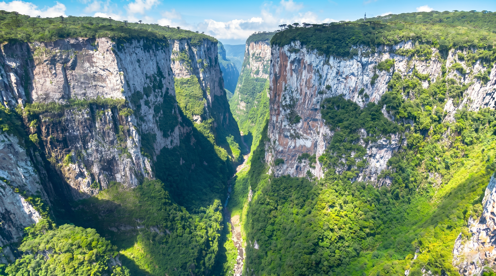
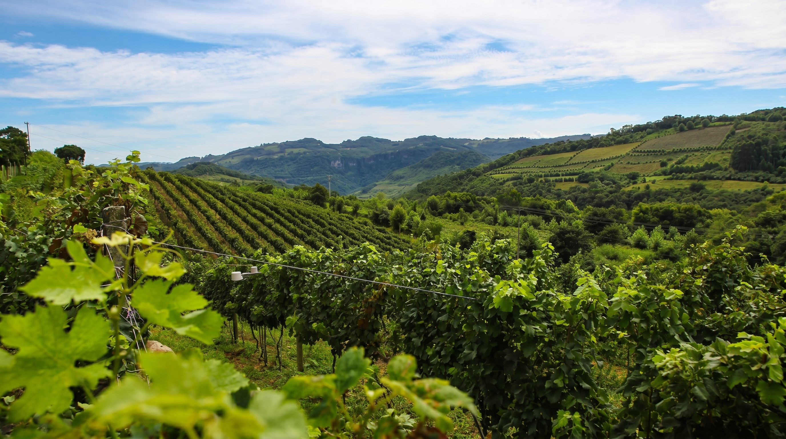
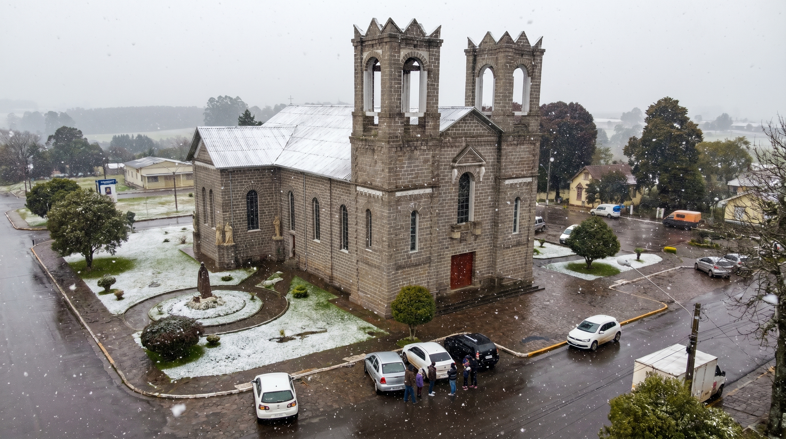
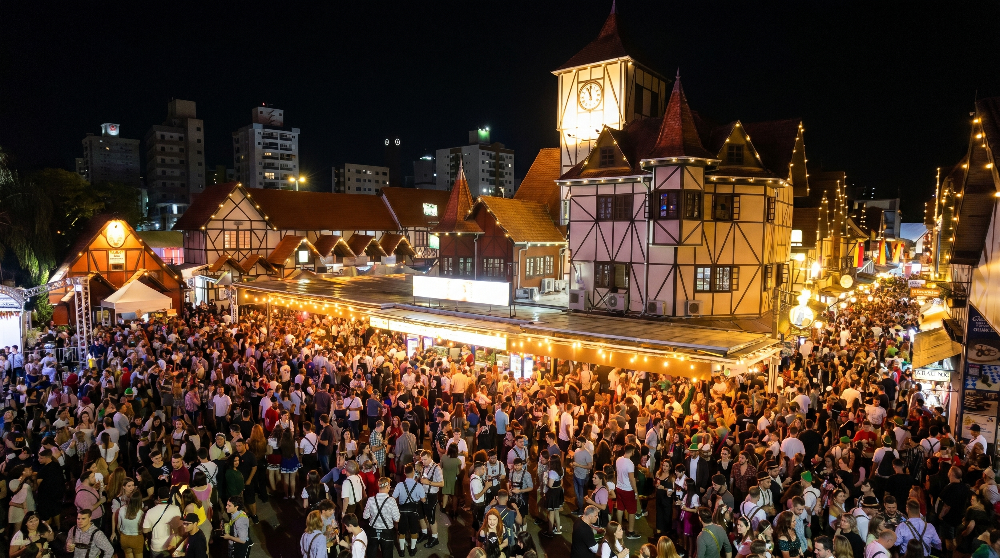

Sul
Pontal da Barra Norte - Balneário Camboriú, Santa Catarina.
Sobre a região
A Região Sul é a menor das regiões brasileiras em área, mas destaca-se pela forte influência da imigração europeia, pelo elevado desenvolvimento econômico e pela diversidade de paisagens. A região reúne serras, campos, florestas de araucárias, cânions e um litoral marcado por belas praias e lagoas.

Área
576 mil km²
6,8% do território brasileiro.
População
30 milhões de habitantes
14% da população brasileira.
Quantidade de estados
3 estados
Paraná, Santa Catarina, Rio Grande do Sul.
Capital de referência
Curitiba (PR)
Curitiba é capital por sua relevância econômica, urbana e ambiental.
Características geográficas

Características climáticas

Características culturais

Estados da região Sul

Paraná
Capital: Curitiba

Rio Grande do Sul
Capital: Porto Alegre

Santa Catarina
Capital: Florianópolis